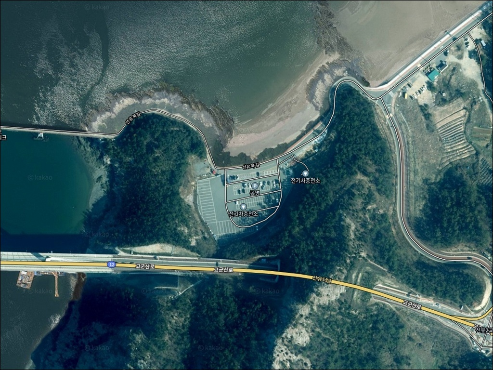
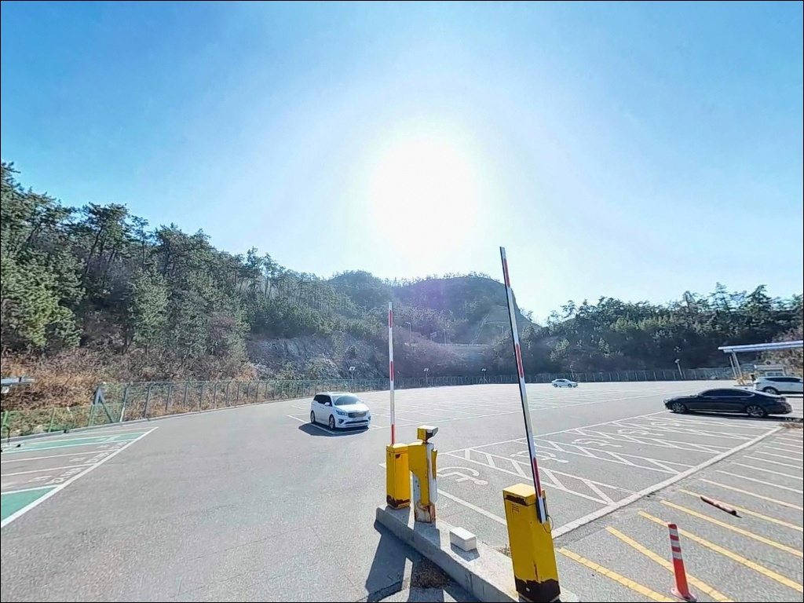
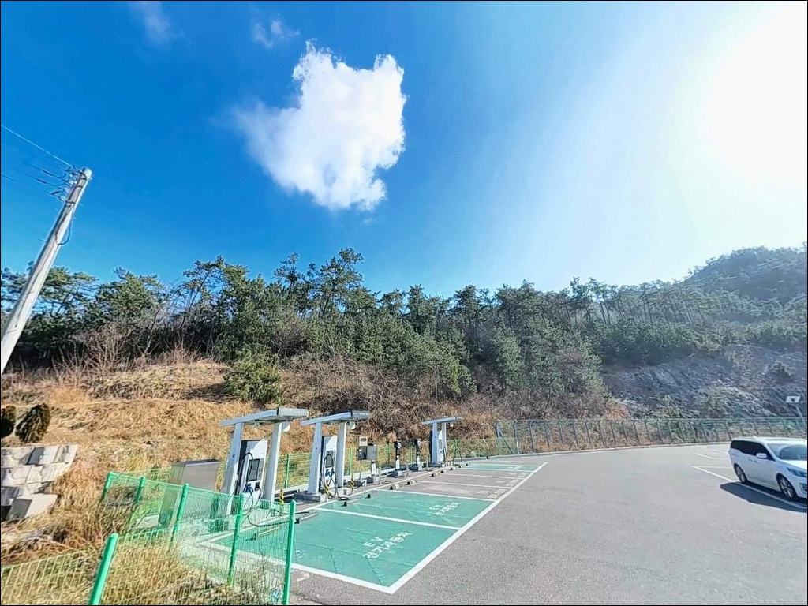
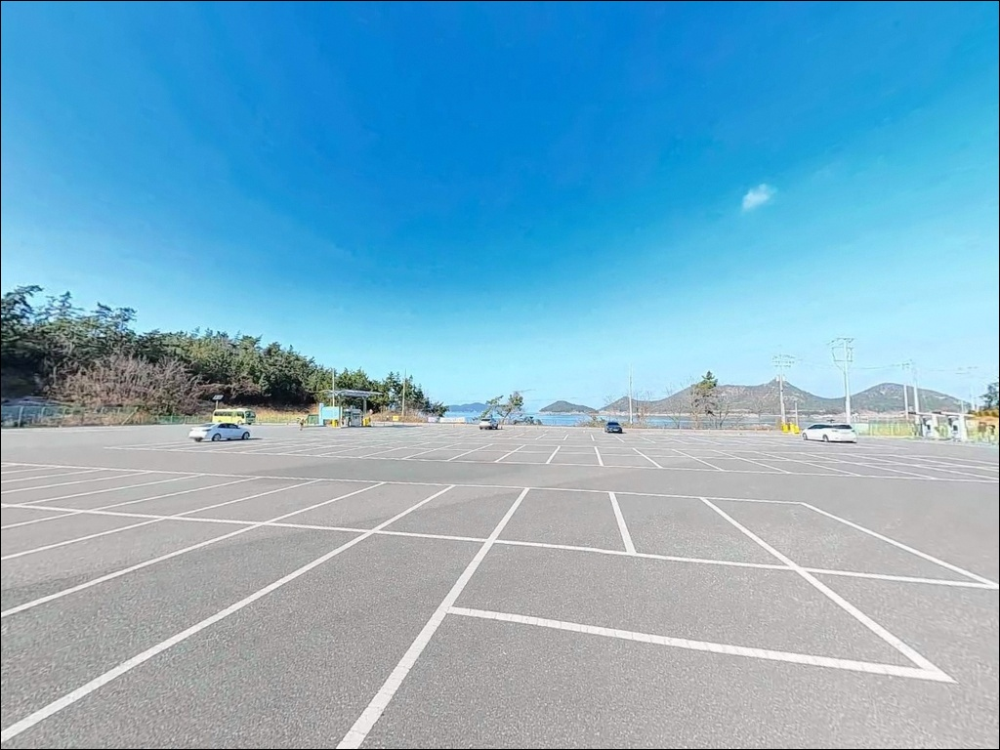
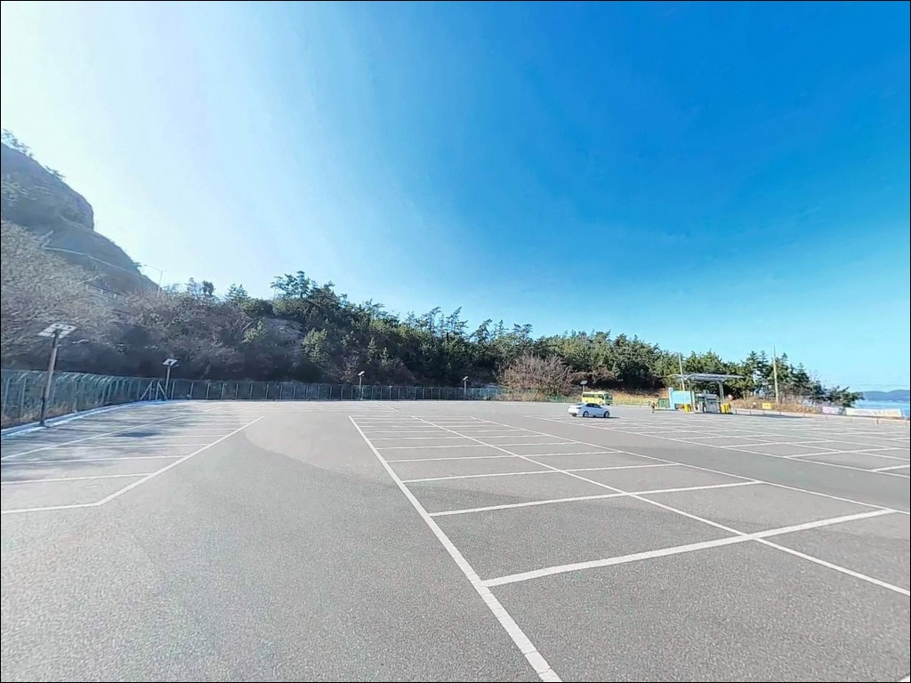
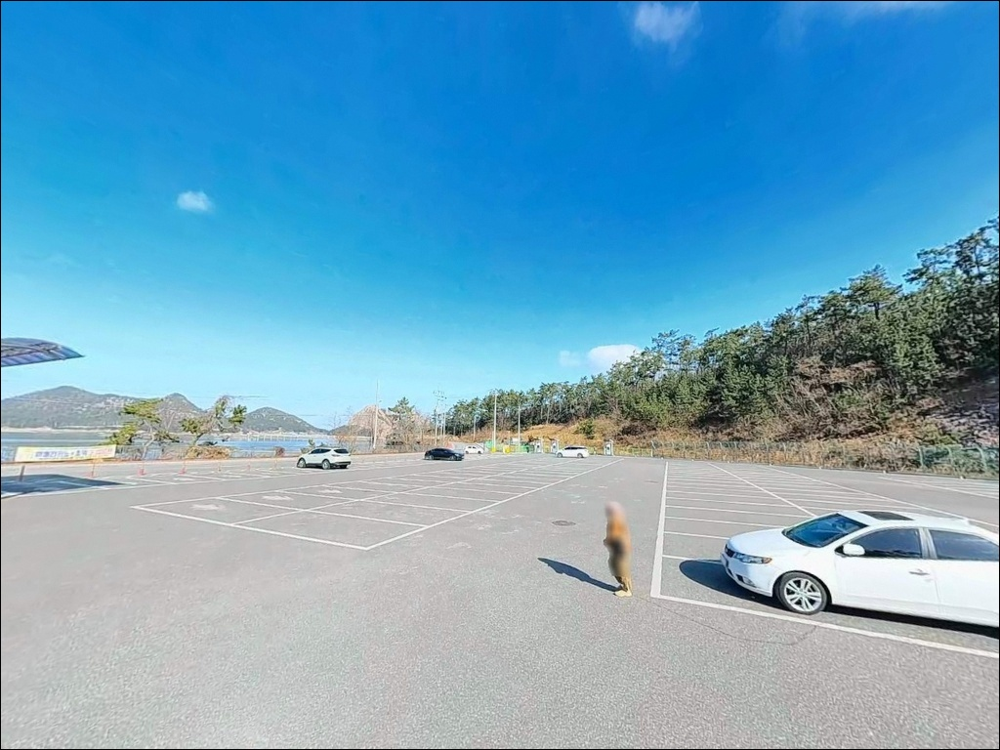
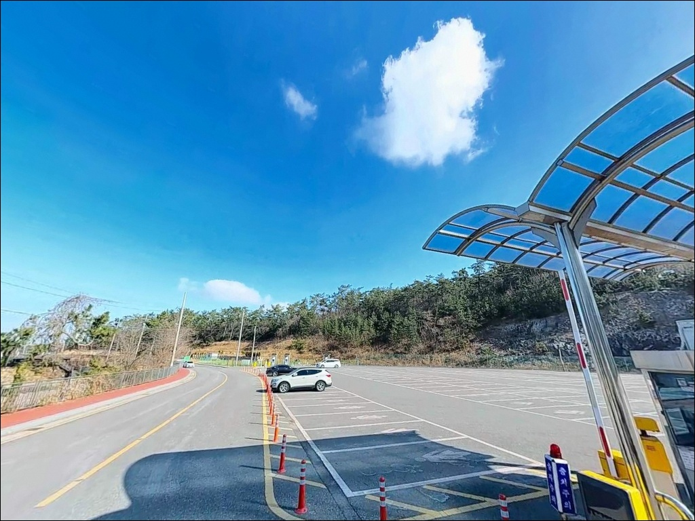
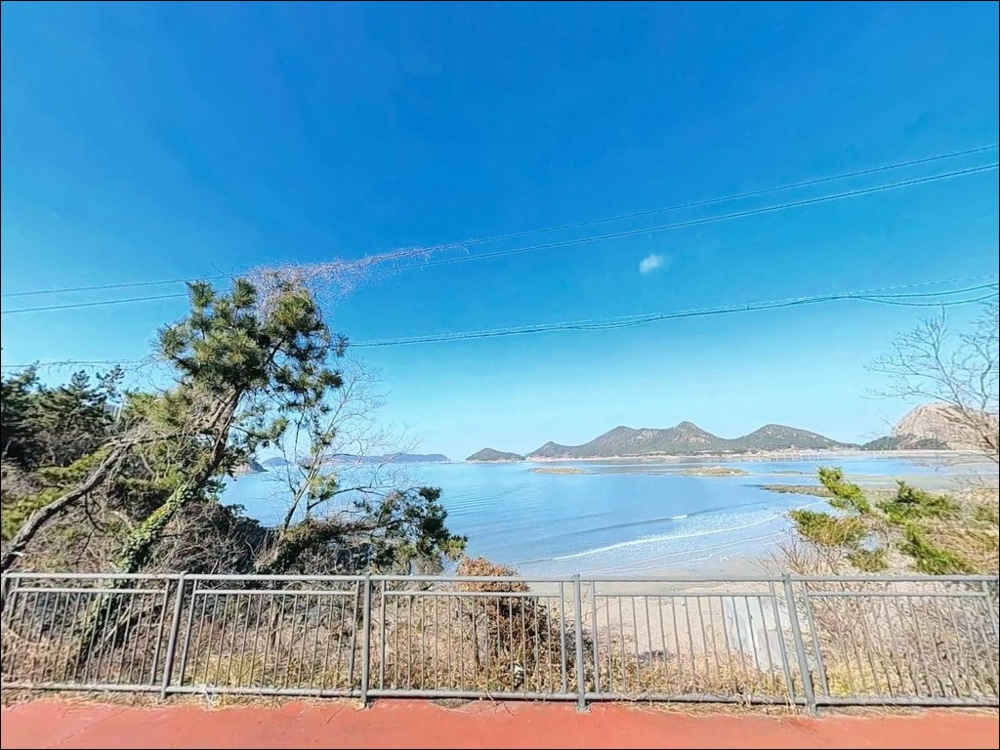
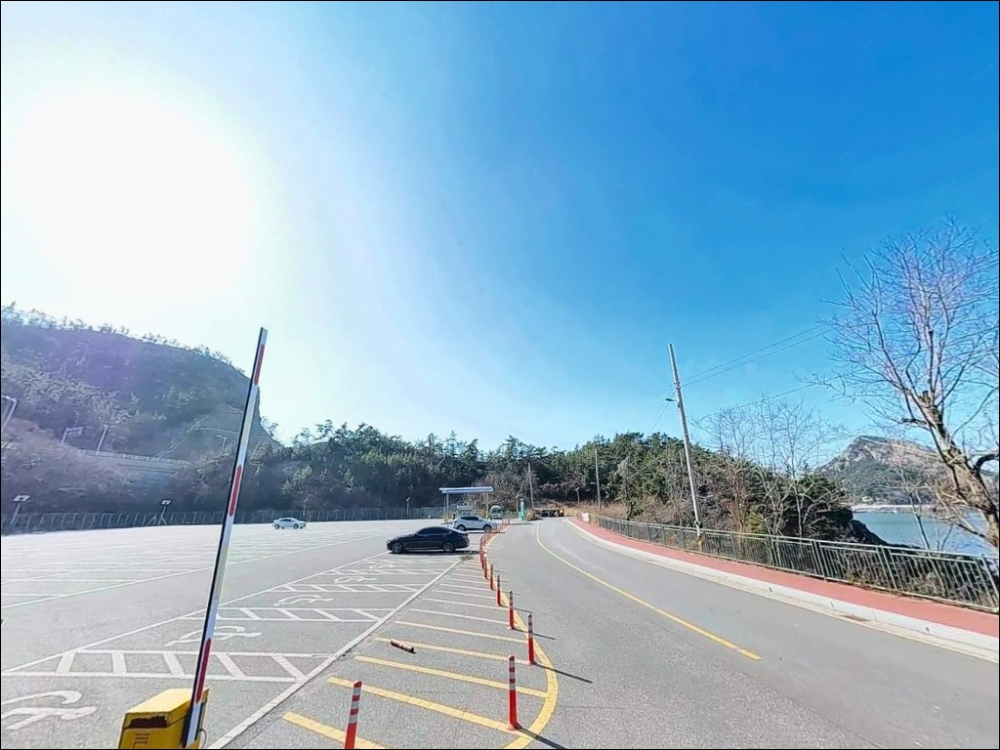

선유도리 수원지 공영주차장, 선유도 전북 군산시 자연 그대로의 분위기에서 차박, 낚시를 즐기기 좋은 포인트
이 페이지에는 광고(제휴 링크 포함)가 있으며, 광고 링크를 통해 구매하면 운영자가 판매 수익 또는 수수료를 받을 수 있습니다. 포인트 사진: 카카오맵 스카이뷰·로드뷰. 이 페이지의 지도·사진 이미지는 카카오맵의 실제 서비스 이미지와 다를 수 있습니다.


포인트 안내
선유도리 수원지 공영주차장
(기도등대 방파제 거점 주차지)
전북 군산시 옥도면 선유도리 172-2
선유도 기도등대 방파제를 처음 찾는 낚시꾼이
가장 많이 틀리는 판단은 물때입니다.
수원지 공영주차장에 주차한 뒤
장비를 들고 방파제까지 직접 걸어가야 하는 구조인 데다,
서해 조류가 강해지는 사리 전후 시간대에 진입하면
어떤 채비를 써도 흐름을 버티기 어려운
상황이 됩니다.
이 글은 진입 동선과 기도등대 방파제 낚시 여건,
차박 체류 조건에 집중합니다.
조황 단정이나 특정 어종 보장은
이 글의 범위에 포함되지 않습니다.
선유도는 새만금방조제에서
신시도와 무녀도를 거쳐 차량으로 접근하는
고군산군도 소속의 섬입니다.
섬 내 여러 방파제 중
기도등대 방파제는 선유3구 끝단에 자리한
소규모 방파제로,
낚시인들 사이에서 생활낚시 포인트로
알려진 곳입니다.

1. 진입 동선과 주차 거점 구조
선유도는 새만금방조제~신시도~무녀도로
이어지는 연결 도로를 통해 차량 진입이 가능합니다.
본토에서 다리로 연결된 구조이지만,
섬 내부 도로는 소로 수준이며
선유3구 방향 구간에는 폭이 좁은 구간이 포함되어 있습니다.
처음 방문이라면 출발 전
위성지도로 진입 동선을 미리 확인하는 것이
현장 혼선을 줄이는 기본 준비입니다.
수원지 공영주차장은 기도등대 방파제를
이용하기 위한 거점 주차 공간입니다.
방파제 자체에는 차량 진입이 차단되어 있어
주차 후 낚시 장비를 직접 들고
도보로 방파제까지 이동하는 구조입니다.
공영주차장 규모상 차량 회차는
비교적 수월한 편이며,
소형에서 중형 차량까지 접근이 가능합니다.
도보 이동이 필수인 구조인 만큼
낚시 장비는 이동에 적합하게 정리해 가는 것이
현장 진입 속도를 높이는 조건입니다.
부피가 크거나 무거운 장비는
이동 동선에서 부담이 되는 구성입니다.

2. 차박 환경과 야간 체류 여건
수원지 공영주차장은 관광지 특성상
낮 시간대에는 방문객 통행이 활발합니다.
주간에는 차량 출입과 관광객 이동이 많아
차박 환경으로 보기에는 적합하지 않은 편입니다.
야간에는 통행이 줄어드는 구조이며,
선유3구는 민가 밀집도가 낮아
비성수기 야간은 비교적 조용한 환경이 됩니다.
야간 가로등 여부와 주변 밝기는
현장에서 직접 확인이 필요하며,
야간 낚시를 겸할 경우
개인 헤드랜턴은 필수 장비입니다.
관광 성수기(7~8월)에는
주차 공간 확보 자체가 어려울 수 있으므로,
차박 관점에서는 비성수기 방문이
더 유리한 조건입니다.


3. 주변 편의시설 및 인프라 현황
공영주차장 내 전기차 완속 충전기가
설치되어 있어 전기차 이용 낚시인에게는
유리한 조건 중 하나입니다.
선유도 해수욕장 인근에는
편의점이 분포하며 식당도 운영됩니다.
다만 성수기 외에는
운영 시간이 단축되거나 휴업하는 경우가 있어,
식수와 기본 소모품은 출발 전에 갖춰
두는 편이 안전합니다.
군산 본토까지 거리가 있는 섬 지역이므로
응급 상황에 대비한 비상약품과
구급 장비도 기본으로 챙기는 것이 좋습니다.
연료 역시 선유도 진입 전
본토에서 충분히 확인하는 것이 기본입니다.

4. 물때와 장비 준비가 방문 성패를 가르는 이유
선유도 일대는 서해 고군산권으로
조수 간만의 차가 크고
물때에 따른 조류 흐름 변화가 뚜렷한 해역입니다.
물때란 조수 간만의 주기를 나타내는 개념으로,
서해 낚시에서 입장 시각과
채비 선택의 기준이 됩니다.
사리에 가까울수록 조류가 강해지고
조금에 가까울수록 채비 컨트롤이 쉬워지는
구조입니다.
바다타임에서 옥도면 또는 선유도 기준
물때를 확인하고,
조금 전후 또는 정조 타이밍을 목표로
출발 시각을 계획하는 것이 기본 전략입니다.
사리 전후에는 방파제 외항 쪽
조류가 너무 강해져 채비 흐름을 버티기 어렵습니다.
도보 이동이 필수인 구조라는 특성도
준비 계획에 반영해야 합니다.
이동에 소요되는 시간을 고려해
물때 타이밍보다 여유 있게 도착하는 것이
실제 포인트 확보를 앞당기는 조건입니다.

5. 기도등대 방파제 지형 기반 낚시 여건 분석
기도등대 방파제는 선유도 서쪽 끝단에 자리한
소규모 방파제로, 외항과 내항이 구분되는 구조입니다.
방파제 외측은 고군산군도 외해 방향으로 열려 있어
서해 조류 흐름의 영향을 직접 받는 편입니다.
외측에는 말풀 군락이 발달해 있어
갑오징어의 서식과 은신에 활용되는
지형 조건을 갖추고 있습니다.
기도등대 방파제 외측은 말풀 군락이 분포한 구간으로,
갑오징어 에깅 채비가 어울리는 지형 조건입니다.
봄부터 가을까지 시즌 폭이 넓어
이 구간을 주 타깃으로 삼을 수 있습니다.
내항 쪽은 조류 영향이 줄어드는 구조로,
찌낚시나 가벼운 루어 채비를 운용하기에
보다 수월한 조건이 됩니다.
수심은 그리 깊지 않은 편이며
방파제 가까운 구간은 암반과 잔돌이 섞인 바닥이라
밑걸림이 발생할 수 있습니다.
채비 손실에 대비해 여분 채비를
넉넉하게 준비하는 것이 기본이며,
외항과 내항의 조류 흐름 차이를 먼저 파악한 뒤
자리를 잡는 것이
이 방파제를 공략하는 첫 번째 판단 기준입니다.
최신 조황은 출조 전에
「선유도 낚시」, 「기도등대 조황」
키워드로 검색해 보시기 바랍니다.


6. 포인트에 어울리는 낚시 스타일
갑오징어 에깅이란 에기(인조 미끼)를 사용해
갑오징어를 노리는 루어낚시 방식입니다.
기도등대 방파제 외측 말풀 구간은
에깅 채비가 충분히 힘을 발휘할 수 있는
지형 조건을 갖추고 있습니다.
조류가 완만하게 흐르는 조금 전후 타이밍에
외항 쪽으로 캐스팅하여
말풀 상단을 천천히 끌어오는 방식이
이 포인트 구조와 잘 맞습니다.
루어낚시도 이 포인트 구조에 어울립니다.
지그헤드에 웜을 달아
내항 쪽 암반 경계선을 탐색하는 방식으로
우럭과 놀래미(쥐노래미)를 노릴 수 있습니다.
외항 쪽 광어를 노린 원거리 캐스팅도
정조 타이밍에 시도해볼 수 있는 방식입니다.
원투낚시는 내항 쪽 바닥 어종을 노리기 적합합니다.
수심이 얕은 편이라
봉돌 무게는 조류 세기에 맞춰 조정하는 것이
자리를 잡는 조건입니다.
야간에는 붕장어 원투를 기대해볼 수 있는 구조이며,
이 경우 방파제 발판 상태를
주간에 미리 확인해 두는 것이
안전한 야간 운용의 기본입니다.

7. 대안 포인트와 플랜 B 동선
기도등대 방파제 조류가 강하거나
주차 공간이 여의치 않을 때는
선유4구 방파제가 첫 번째 대안입니다.
같은 선유도 내에 위치해 이동 동선이 짧고,
낚시 커뮤니티에서도 포인트로 언급되는 곳입니다.
선유대교 주변 석축·주차장 구간도
대안으로 살펴볼 만합니다.
다리 인근 수로 구간은
조류 흐름이 생기는 경우가 많아
루어와 에깅 모두 시도해볼 수 있는 구조이며,
차박과 낚시를 겸하기 좋은
여건이 갖춰진 곳으로 알려져 있습니다.
고군산군도 전체 범위에서 대안을 넓힐 경우
무녀2구 선착장도 고려 대상입니다.
선유도에서 무녀도 방면으로 이동하는
동선 위에 있어
플랜B로 묶어 두기 좋은 포인트입니다.

준비된 낚시꾼에게
기도등대 방파제가 제값을 합니다
갑오징어 에깅이나 루어낚시를 즐기는 낚시인이라면
기도등대 방파제의 말풀 지형과
서해 조류 흐름은
익숙하면서도 공략할 구간이 있는 구조입니다.
물때를 맞추고 장비를 효율적으로 챙겨
도보 이동까지 계획해 두면,
포인트 자체의 여건은
기대를 충족하는 편입니다.
반면 물때 계획 없이 사리 전후에 진입하거나,
방파제까지 걸어가야 한다는 점을 모르고
대형 장비를 가져온다면
낚시 시작부터 시간이 소요됩니다.
물때 확인, 경량 장비 준비, 도보 동선 계획,
이 세 가지를 갖추고 가는 것이
이 포인트를 제대로 즐기는 방식입니다.
관광지인 선유도의 밤은
비성수기라면 비교적 조용한 편이어서,
낚시를 마치고 차에서 하룻밤 머물며
고군산군도 서해 바람을 온전히 느끼기 좋은
출조가 될 수 있습니다.